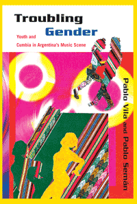

<body bgcolor="#FFFFFF" text="#000000" link="#0000FF" vlink="#CC0000" alink="#CC0000"><center><hr width="350" size="1" align="center" noshade>How cumbia villera and Argentine popular culture reshape and reflect the changes in gender relations among the country's underclass youth<hr width="350" size="1" align="center" noshade><p><a href="https://cdcshoppingcart.uchicago.edu/Cart/ChicagoBook.aspx?ISBN=9781439902660&&PRESS=temple" target="_top">Buy this book!</a> | <a href="https://cdcshoppingcart.uchicago.edu/Cart/Cart.aspx?PRESS=temple" target="_top">View Cart</a> | <a href="https://cdcshoppingcart.uchicago.edu/Cart/Cart.aspx?PRESS=temple" target="_top">Check Out</a></p><p></p></center><!--none//--><h1>Troubling Gender</h1>
<H2>Youth and Cumbia in Argentina's Music Scene</H2>
<h3>Pablo Vila and Pablo Semán, contributions by Eloísa Martín and María Julia Carozzi</h3>
<P>cloth 1-43990-266-6 $90.50, Jul 11, <FONT COLOR=#990033>Available</FONT>
<br>paper 1-43990-267-4 $29.95, Jul 11, <FONT COLOR=#990033>Available</FONT>
<br>Electronic Book 1-43990-268-2 $29.95 <FONT COLOR=#990033>Available</FONT>
<BR> 230 pp
6x9
</P><BLOCKQUOTE><I>"After the Mexicanization of Colombian cumbia, now the Argentines are dancing to cumbia and making it their own! </I>Troubling Gender<I> combines a dynamic discursive and social analysis of the explicit sexual content of the lyrics of cumbia villera with a rich, ethnographic discussion of how the young men and women dancers (dis)identify with the lyrics while enjoying the danceable rhythms. The authors’ examination of the gender and sexual dynamics that this music triggers among its fans reminds us that the gender wars in Latin America are not over, despite the increasing presence of sex in media and the public space."</I>
<br>&#151<b>Frances Aparicio</b>, author of<I> Listening to Salsa: Gender, Latin Popular Music, and Puerto Rican Cultures</I></I></BLOCKQUOTE>
<P>Cumbia villera&#8212;literally, cumbia from the shantytowns&#8212;
is a musical genre quite popular with Argentine youth who frequent urban dance halls. Its songs are known for having highly sexualized lyrics&#8212;
about girls dancing provocatively or experiencing erotic pleasure. The songs exhibit the tensions at play in the different ways people relate to this musical genre.
<P>In <i>Troubling Gender</i>, noted sociologists Pablo Vila and Pablo Semán scrutinize the music's lyrics and the singers' and dancers' performances. At the same time, the authors conduct in-depth interviews to examine the ways males construct and appropriate cumbia's lyrics, and how females identify, appropriate, and playfully and critically manipulate the same misogynistic songs.
<P>Addressing the relationship between this form of music and the wider social, political, and economic changes that influence the lives of urban youth, <i>Troubling Gender</i> argues that the music both reflects and influences the ways in which women's and men's roles are changing in Argentine society.
<BR>&nbsp;<h2>Excerpt</h2><P>Excerpt available at <a href="http://www.temple.edu/tempress">www.temple.edu/tempress</a></p>
<BR>&nbsp;<h2>Reviews</h2>
<p><I>"</I>Troubling Gender<I> is a groundbreaking book on the relationship between gender struggle in the context of changing opportunities for men and women and the representation of violence in the cumbia villera genre. This focus enables Vila and Semán to track quite expertly the transformation of social conflicts relating to work, urban life, and gender relations into the cultural field. The authors offer not only a rich sociological reflection on the negotiation of female autonomy in the context of popular music but also an interesting analysis of the lyrics of the genre. </I>Troubling Gender<I> also pays attention to the context within which the songs are played and emitted, something usually left aside in the sociology and anthropology of music."</I>
<br>&#151<b>George Yúdice</b>, author of <I>The Expediency of Culture: Uses of Culture in the Global Era</I>
<p><I>"</I>Troubling Gender<I> offers a nuanced interpretation of the envelope-pushing sexuality associated with cumbia villera, demonstrating how its young musicians and fans are imagining and performing their identities within an unstable socioeconomic context. This is an important book with a great deal to contribute to the literature on both gender relations and Latin American popular music and dance cultures, as well as to discussions of the impact of media and economic inequalities on young people's lives."</I><br>&#151<b>Deborah Pacini Hernandez</b>, author of <I>Oye Como Va! Hybridity</I> and <I>Identity in Latino Popular Music</I> (Temple)
<p><i>"The book looks into the complex gender relations of Argentine teenagers: the sexual liberation of female youth and the affirmation of masculine sexuality through cumbia villera." </i><br>&#151<b><i>NACLA Report on the Americas</i></b>
<p><i>"Vila and Semán offer insights into how </i>cumbia villera<i> lyrics and dance practices are highly gendered and sexualized, and how these young men and women grapple with sexual experiences that change how they relate to each other. Summing Up: Highly recommended."</i><br>&#151<b><i>Choice</i></b>
<p><i>"</i>Troubling Gender<i> is a thorough lesson in pop semiotics. Meanings are complex and require the analyst to consider the interdependence between intention and reception of symbols. Moreover, popular youth culture is historical and the authors do well to contextualize cumbia villera's emergence in Argentina.... [W]hat is refreshing about this book is that the authors clearly and artfully argue exactly what most people do not want to hear: pop culture is not literal nor is it empty." </i><br>&#151<b><i>Journal of Latin American and Caribbean Anthropology</i></b>
<p><i>"</i>Troubling Gender<i> is a refreshingly honest exploration of gender relations as articulated through the performance and reception of cumbia villera in Argentina. The authors acknowledge the complexity of human beings, cumbieros, and academic researchers alike, and their multiple subject positions. This book opens the door for further discussion of gender politics in a world where gender norms have experienced drastic shifts in a relatively short amount of time."</i>
<br>&#151<b><i>The Yearbook for Traditional Music</i></b>
<p><i>"Anybody interested in gender, sexuality, and especially how music becomes part of the fabric of everyday life, should read </i>Troubling Gender<i>. The subtlety of its analysis makes the book a must for scholars of what is now called 'music sociology.'"</i>
<br>&#151<b><i>Contemporary Sociology</i></b>
<p><i>"</i>Troubling Gender<i>, a monograph focusing on the intersections of sex and </i>cumbia<i> music in contemporary Argentina, straddles quite impressively the difficulty of exploring how those who listen and dance to it negotiate and consume the encoded meanings in this popular music genre.... The book's writing style hits a successful balance between clarity and density, maintaining scholarly sophistication without sacrificing coherence or lucidity. But the most refreshing element of the book is how </i>Troubling Gender<i> is, actually, a textual collaboration.... Vila and Semán's findings stand by themselves solidly, and the historical chapter and postscript excellently complement the authors' arguments."</i>
<br>&#151<b><i>Social Forces</i></b>
<BR>&nbsp;<h2>Contents</h2><P>
<p>Acknowledgments
<br>Introduction
<br>1. The History. Trajectory and Consolidation of the Cumbia in the Field of Argentine Music &#8226; Eloísa Martín <i>(Translated by Pablo Vila)</i>
<br>2. The Lyrics
<br>3. What Boys Have to Say
<br>4. What Girls Have to Say
<br>Conclusion
<br>Postscript: Moving away from Name-Calling &#8226; María Julia Carozzi
<br>Notes
<br>References
<br>Index
</P><BR>&nbsp;<H2>About the Author(s)</H2>
<P><b>Pablo Vila</b> is Professor of Sociology at Temple University. His speciality is the study of processes of social and cultural identification. He researches those processes at two locales, the U.S.-Mexico border and Argentine popular music. He is the author of seven books, including <i>Border Identifications: Narratives of Religion, Gender, and Class on the U.S.-Mexico Border</i>.</P>
<P><b>Pablo Semán</b> is a researcher at CONICET (Consejo Nacional de Investigaciones Científicas y Técnicas) in Argentina and El Colegio de México in México. He specializes in mass culture, popular music, and the interpenetration of popular literature and religious tradition. His most recent books are <i>Bajo Continuo: Exploraciones descentradas sobre cultura popular y masiva</i> and (with Daniel Míguez) <i>Entre santos cumbias y piquetes</i>.</P>
<P><b>Eloísa Martín</b> is Assistant Professor in the Department of Sociology at the University of Rio de Janeiro in Brazil. She is the editor of <I>Current Sociology</I> and has published extensively on popular culture and popular religion in a number of international journals.</P>
<P><b>María Julia Carozzi</b> is tenured Professor of Anthropology in the Institute of Higher Social Studies at the National University of San Martin (Instituto de Altos Estudios Sociales, Universidad Nacional de San Martín) and tenured researcher at the National Council for Scientific and Technological Research in Argentina (CONICET [Consejo Nacional de Investigaciones Científicas y Técnicas]). She is the coeditor (with César Ceriani Cernadas) of <i>Ciencias sociales y religión en América Latina: Perspectivas en debate</i>.</P>
<BR><H2>Subject Categories</H2>
<p><A HREF="/tempress/gender.html" TARGET="_top">Gender Studies</a>
<BR><A HREF="/tempress/sociology.html" TARGET="_top">Sociology</a>
<BR><A HREF="/tempress/latin.html" TARGET="_top">Latin American/Caribbean Studies</a>
</p>
<p align="center"><a href="https://cdcshoppingcart.uchicago.edu/Cart/ChicagoBook.aspx?ISBN=9781439902660&&PRESS=temple" target="_top">Buy this book!</a> | <a href="https://cdcshoppingcart.uchicago.edu/Cart/Cart.aspx?PRESS=temple" target="_top">View Cart</a> | <a href="https://cdcshoppingcart.uchicago.edu/Cart/Cart.aspx?PRESS=temple" target="_top">Check Out</a></p><p><font face="Arial" size="1"><a href="copyright.html" onMouseOver="window.status='Web Copyright Policy';return true;" onMouseOut="window.status=''" title="Web Copyright Policy">&copy;</a> 2015 <a href="http://www.temple.edu" target="new" onMouseOver="window.status='Link to Temple University home page';return true;" onMouseOut="window.status=''" title="Link to Temple University home page">Temple University</a>. All Rights Reserved. http://www.temple.edu/tempress/titles/2096_reg.html</font></p>